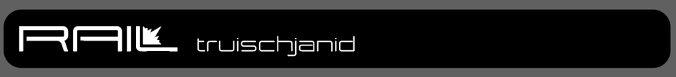
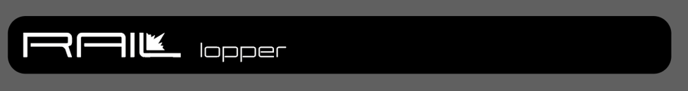
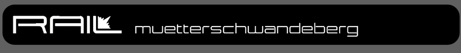
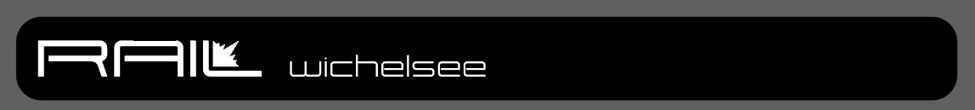

Models
The RAIL family.
From gravel to enduro. Four models with local roots.
Made by hand.
The Rail family is hand TIG-welded from 25CrMo4 steel. Reynolds and Columbus tubes are carefully selected for the loads of each model. Machined parts are made by Lake Zurich. Dropouts follow the UDH standard. Every frame is cathodic dip-coated and then powder-coated for ultimate protection against corrosion and wear. The bottom bracket is engraved with a serial number and name, and the colour is your choice.
Guide prices are for the finished, coated and machined frame, excluding rear shock and VAT.

01 / Enduro Hardtail
Truischjanid

Warning: Long Vehicle
- Long chainstays, a super slack head angle and a steep seat angle
- 160–170 mm travel
A hardtail for your next enduro race, truisch ja nid!
Guide price: CHF 2’500
Guide prices are for the finished, coated and machined frame, excluding rear shock and VAT.
Enquire about this model
02 / Trail / Enduro
Lopper

- 150 mm rear travel, 160 mm front travel
- Suspension linkage optimised for sensitivity
- Super slack head angle, steep seat angle and a balanced rear-end length
A bike between trail and enduro that also enjoys an enduro race
Guide price: CHF 3’100
Guide prices are for the finished, coated and machined frame, excluding rear shock and VAT.
Enquire about this model
03 / Down Country / Trail
Muetterschwandeberg

- 130 mm rear travel, 140 mm front travel
- Low anti-squat (climbs very well)
- Slack head angle, very steep seat angle and a long rear end
A cool down-country / trail bike
Guide price: CHF 3’100
Guide prices are for the finished, coated and machined frame, excluding rear shock and VAT.
Enquire about this model
04 / Gravel
Wichelsee

- Almost unlimited geometry freedom
- Hardpoints positioned to your choice
Classic, delicate, durable, a calm soul
Guide price: CHF 2’500
Guide prices are for the finished, coated and machined frame, excluding rear shock and VAT.
Enquire about this modelLet’s talk about your bike.